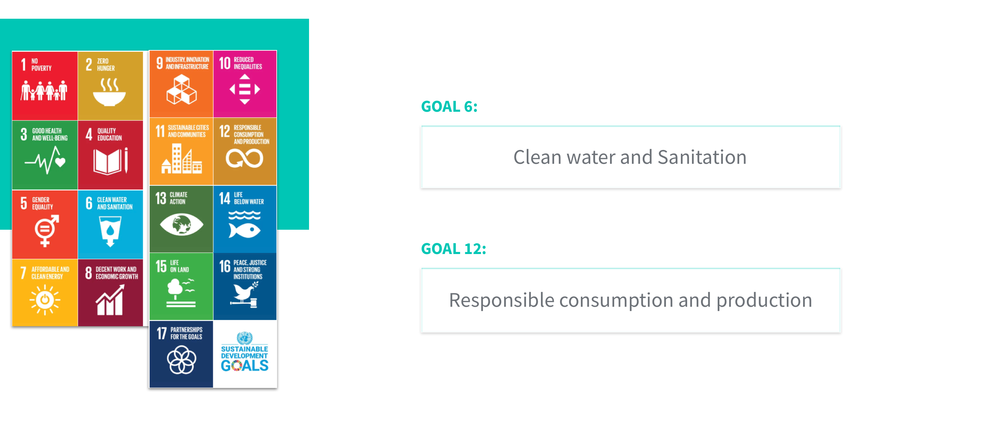

Refillyou
Supporting Sustainable development with a MVP
The aim of the project was to develop a suistainable development solution for a stablished institution using a Landing Page measurable as a means of reducing our sustainable impact. In this case, we chose the Politecnic University of Catalonia and its responsible use of water, plastic bottles and fountains.
ROLE Product Designer in a multidisciplinary team
CONTEXT MVP Landing Page with Lean UX methodology
TOOLS Bootstrap, HTML5, CSS3, Hotjar, Github, Google Analytics
_____________00PROBLEM STATEMENT
The 17 Sustainable Development Goals are the blueprint to achieve a better and more sustainable future for all. They address the global challenges we face, including those related to poverty, inequality, climate change, environmental degradation, peace and justice. We decided to focus on Avoiding waste of water and reducing use of plastic.
_____________01RESEARCH
To tackle trying to solve such a diverse problem that affects the livelihood of millions, extensive research had to be done. Knowing this, we began by scouring the web as well as tapping into our respective networks to learn and understand what we were dealing.
_____________02THE SOLUTION
Refillyou is an initiative of the Polytechnic University of Catalonia, that promotes the use of rainwater in the campus, in addition to partner with 24bottles to give a reusable bottle to each new student. Thanks to the rainwater collection system, it is centralized, filtered and distributed to the campus university fountais where students can refill their own reusable bottle.
_____________03WHY REFILLYOU
_____________04LANDING PAGE
We developed a Landing Page as part of the promotion of the UPC initiave. The goal was to measure the scope of the landing page and using basics of metrics to analyse how users interact with our product. We used mailchimp to send mails with the initiative and attract to enter to the Landing Page.